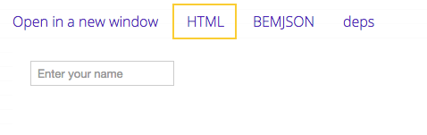

Dist bem-components: подключаем блоки на страницу
Описание урока
Один из вариантов поставки библиотеки bem-components — это предварительно собранные файлы (бандлы), которые подключаются ссылками в HTML страницы. Это самый быстрый способ попробовать блоки библиотеки в действии.
Важно! Данный вариант поставки не позволяет использовать все преимущества БЭМ-проекта: уровни переопределения, миксы и возможность точечной сборки проекта. Для максимально эффективного использования библиотеки, воспользуйтесь поставками source или compiled.
В этом уроке вы научитесь:
Мы подключим блоки button и input из библиотеки в форму приветствия, как показано на рисунке ниже. В результате получим форму, в которой имя пользователя при нажатии на кнопку отобразится в приветствии.

HTML-код страницы с формой приветствия.
Для работы с примерами необходимы:
Как выполнить урок
Есть несколько способов выполнить этот урок: вы можете писать код локально или использовать любую среду веб-разработки (например, JSFiddle, CodePen, JS Bin), которая позволяет редактировать и запускать код HTML, JavaScript и CSS.
Все примеры выполнены в JSFiddle.
Подключение библиотеки
Существует несколько способов получить предсобранные бандлы библиотеки. В документе рассмотрен способ подключения файлов с CDN Яндекса.
Схема подключения файла с CDN: //yastatic.net/название-библиотеки/версия/платформа/имя-файла.
Чтобы подключить скрипты и стили библиотеки в проект, скопируйте ссылки на бандлы в теги <link> и <script>:
<!DOCTYPE html>
<html>
<head>
<meta charset="utf-8">
<title>bem-components as a library</title>
+ <link rel="stylesheet" href="https://yastatic.net/bem-components/latest/desktop/bem-components.css">
</head>
<body>
+ <script src="https://yastatic.net/bem-components/latest/desktop/bem-components.no-autoinit.js"></script>
</body>
</html>
Важно! Библиотека содержит бандлы без автоинициализации (
*.no-autoinit.js), которые позволяют доопределять JavaScript-реализацию блоков библиотеки.
Работа с блоками
Чтобы добавить блок на страницу, необходимо:
Выбрать блок
Зайдите в описание блока на сайте bem.info и выберите подходящий пример:Получить HTML-разметку выбранного блока
Воспользуйтесь примером из документации, чтобы получить HTML. HTML-код блока можно получить несколькими способами:Если новая версия библиотеки будет содержать шаблоны, которые изменят HTML-разметку, потребуется исправлять каждый блок вручную.
Если в новой версии библиотеки обновленные шаблоны изменят разметку, исправлять шаблоны вручную не потребуется. Но генерируемая в браузере разметка хуже индексируется поисковыми системами.
Использование готового HTML
Чтобы получить готовую HTML-разметку блока, перейдите во вкладку HTML в примере блока:

Скопируйте код и вставьте на страницу:
<!DOCTYPE html>
<html>
<head>
<meta charset="utf-8">
<title>bem-components as a library</title>
<link rel="stylesheet" href="https://yastatic.net/bem-components/latest/desktop/bem-components.css">
</head>
<body>
<!-- Блок hello для создания формы приветствия -->
<form class="hello i-bem" data-bem='{ "hello": {} }'>
<div class="hello__greeting">Hello, %user name%!</div>
<!-- HTML-код для блока input -->
+ <span class="input input_theme_islands input_size_m i-bem" data-bem='{"input":{}}'>
+ <span class="input__box">
+ <input class="input__control" placeholder="User name" autocomplete="off" autocorrect="off" autocapitalize="off" spellcheck="false">
+ </span>
+ </span>
<!-- HTML-код для блока button -->
+ <button class="button button_theme_islands button_size_m button_type_submit button__control i-bem" data-bem='{"button":{}}' role="button" type="submit">
+ <span class="button__text">Click</span>
+ </button>
</form>
<script src="https://yastatic.net/bem-components/latest/desktop/bem-components.no-autoinit.js"></script>
</body>
</html>
Блоки input и button отобразились на странице. Чтобы имя из поля ввода появлялось в приветствии, опишите поведение блоков:
modules.define('hello', ['i-bem-dom', 'input', 'button'],
function(provide, bemDom, Input, Button) {
provide(bemDom.declBlock('hello', {
onSetMod: {
js: {
inited: function() {
this._input = this.findChildBlock(Input);
}
}
},
_onSubmit: function(e) {
e.preventDefault();
this._elem('greeting').domElem.text('Hello, ' + this._input.getVal() + '!');
}
}, {
lazyInit: true,
onInit: function() {
this._domEvents().on('submit', this.prototype._onSubmit);
}
}));
});
// Вызов `init();`. Hеобходимо явно вызвать `init();`, чтобы инициализировать блоки, заранее присутствующие в HTML-разметке.
modules.require('i-bem-dom__init', function(init) { init(); });
Чтобы изменять поведение блоков, используется фреймворк i-bem.js, который является частью библиотеки bem-core. Чтобы писать код на i-bem.js, дополнительно подключать на страницу предсобранные бандлы библиотеки bem-core не нужно, они уже включены в сборку.
Проект в JSFiddle.
Генерация HTML в браузере
Чтобы генерировать HTML-разметку блока в браузере, необходимо использовать шаблонизатор BEMHTML, который преобразует BEMJSON в HTML. Для этого подключите бандл с шаблонизатором (*.js+bemhtml.js):
<!DOCTYPE html>
<html>
<head>
<meta charset="utf-8">
<title>bem-components as a library</title>
<link rel="stylesheet" href="https://yastatic.net/bem-components/latest/desktop/bem-components.css">
</head>
<body class="page page_theme_islands">
<!-- Блок hello для создания формы приветствия -->
<form class="hello i-bem" data-bem='{ "hello": {} }'>
<div class="hello__greeting">Hello, %user name%!</div>
</form>
- <script src="https://yastatic.net/bem-components/latest/desktop/bem-components.no-autoinit.js"></script>
+ <script src="https://yastatic.net/bem-components/latest/desktop/bem-components.no-autoinit.js+bemhtml.js"></script>
</body>
</html>
Чтобы получить BEMJSON-код блока, перейдите во вкладку BEMJSON в примере блока:

Скопируйте код и вставьте его в скрипт с шаблоном на страницу:
modules.define('hello', ['i-bem-dom', 'BEMHTML', 'input', 'button'],
function(provide, bemDom, BEMHTML, Input, Button) {
provide(bemDom.declBlock('hello', {
onSetMod: {
js: {
inited: function() {
bemDom.append(this.domElem, BEMHTML.apply([ // Выполнение шаблона
+ {
+ block: 'input',
+ mods: {
+ theme: 'islands',
+ size: 'm'
+ },
+ placeholder: 'User name'
+ },
+ {
+ block: 'button',
+ mods: {
+ theme: 'islands',
+ size: 'm',
+ type: 'submit'
+ },
+ text: 'Click'
+ }
]));
this._input = this.findChildBlock(Input);
}
}
},
_onSubmit: function(e) {
e.preventDefault();
this._elem('greeting').domElem.text('Hello, ' + this._input.getVal() + '!');
}
}, {
onInit: function() {
this._domEvents().on('submit', this.prototype._onSubmit);
}
}));
});
// Вызов `init();`
modules.require('i-bem-dom__init', function(init) { init(); });
Проект в JSFiddle.
Результат
Форма приветствия готова. Чтобы она выглядела, как на рисунке в начале документа, добавьте блокам новые стили.
Не получилось?
Если при создании формы возникли сложности, поищите решение на форуме. Если готового ответа не нашлось, создайте пост со своим вопросом.